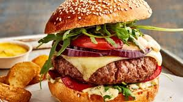
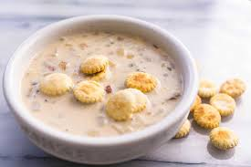

Burger
Un classique américain, un steak haché grillé dans un pain moelleux, souvent garni de fromage, laitue, tomate et sauce.
Macaroni au fromage
Pâtes au fromage gratinées, crémeuses et réconfortantes, un plat familial très populaire.

Côtes levées BBQ
Côtes de porc marinées et grillées lentement avec une sauce barbecue sucrée et épicée.

Clam Chowder
Soupe crémeuse aux palourdes, pommes de terre, céleri et oignons, très appréciée sur la côte Est.

Pancakes
Crêpes épaisses et moelleuses, souvent servies au petit-déjeuner avec du sirop d'érable et du beurre.